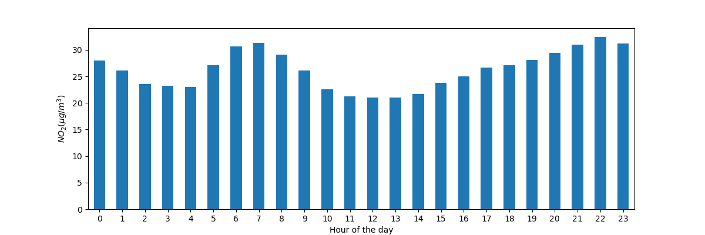
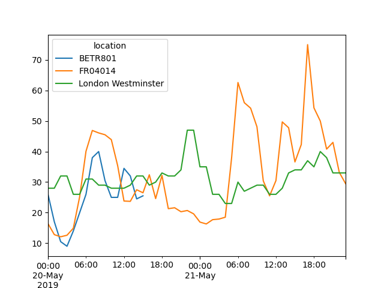
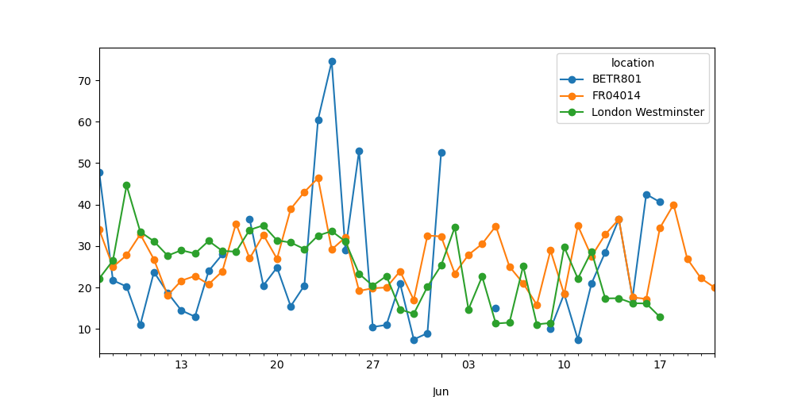

In [1]: import pandas as pd
In [2]: import matplotlib.pyplot as plt
-
Air quality data
For this tutorial, air quality data about \(NO_2\) and Particulate matter less than 2.5 micrometers is used, made available by OpenAQ and downloaded using the py-openaq package. The
To raw dataair_quality_no2_long.csv"data set provides \(NO_2\) values for the measurement stations FR04014, BETR801 and London Westminster in respectively Paris, Antwerp and London.In [3]: air_quality = pd.read_csv("data/air_quality_no2_long.csv") In [4]: air_quality = air_quality.rename(columns={"date.utc": "datetime"}) In [5]: air_quality.head() Out[5]: city country datetime location parameter value unit 0 Paris FR 2019-06-21 00:00:00+00:00 FR04014 no2 20.0 µg/m³ 1 Paris FR 2019-06-20 23:00:00+00:00 FR04014 no2 21.8 µg/m³ 2 Paris FR 2019-06-20 22:00:00+00:00 FR04014 no2 26.5 µg/m³ 3 Paris FR 2019-06-20 21:00:00+00:00 FR04014 no2 24.9 µg/m³ 4 Paris FR 2019-06-20 20:00:00+00:00 FR04014 no2 21.4 µg/m³
In [6]: air_quality.city.unique() Out[6]: array(['Paris', 'Antwerpen', 'London'], dtype=object)
How to handle time series data with ease?#
Using pandas datetime properties#
I want to work with the dates in the column
datetimeas datetime objects instead of plain textIn [7]: air_quality["datetime"] = pd.to_datetime(air_quality["datetime"]) In [8]: air_quality["datetime"] Out[8]: 0 2019-06-21 00:00:00+00:00 1 2019-06-20 23:00:00+00:00 2 2019-06-20 22:00:00+00:00 3 2019-06-20 21:00:00+00:00 4 2019-06-20 20:00:00+00:00 ... 2063 2019-05-07 06:00:00+00:00 2064 2019-05-07 04:00:00+00:00 2065 2019-05-07 03:00:00+00:00 2066 2019-05-07 02:00:00+00:00 2067 2019-05-07 01:00:00+00:00 Name: datetime, Length: 2068, dtype: datetime64[ns, UTC]
Initially, the values in
datetimeare character strings and do not provide any datetime operations (e.g. extract the year, day of the week,…). By applying theto_datetimefunction, pandas interprets the strings and convert these to datetime (i.e.datetime64[ns, UTC]) objects. In pandas we call these datetime objects similar todatetime.datetimefrom the standard library aspandas.Timestamp.
Note
As many data sets do contain datetime information in one of
the columns, pandas input function like pandas.read_csv() and pandas.read_json()
can do the transformation to dates when reading the data using the
parse_dates parameter with a list of the columns to read as
Timestamp:
pd.read_csv("../data/air_quality_no2_long.csv", parse_dates=["datetime"])
Why are these pandas.Timestamp objects useful? Let’s illustrate the added
value with some example cases.
What is the start and end date of the time series data set we are working with?
In [9]: air_quality["datetime"].min(), air_quality["datetime"].max()
Out[9]:
(Timestamp('2019-05-07 01:00:00+0000', tz='UTC'),
Timestamp('2019-06-21 00:00:00+0000', tz='UTC'))
Using pandas.Timestamp for datetimes enables us to calculate with date
information and make them comparable. Hence, we can use this to get the
length of our time series:
In [10]: air_quality["datetime"].max() - air_quality["datetime"].min()
Out[10]: Timedelta('44 days 23:00:00')
The result is a pandas.Timedelta object, similar to datetime.timedelta
from the standard Python library and defining a time duration.
The various time concepts supported by pandas are explained in the user guide section on time related concepts.
I want to add a new column to the
DataFramecontaining only the month of the measurementIn [11]: air_quality["month"] = air_quality["datetime"].dt.month In [12]: air_quality.head() Out[12]: city country datetime ... value unit month 0 Paris FR 2019-06-21 00:00:00+00:00 ... 20.0 µg/m³ 6 1 Paris FR 2019-06-20 23:00:00+00:00 ... 21.8 µg/m³ 6 2 Paris FR 2019-06-20 22:00:00+00:00 ... 26.5 µg/m³ 6 3 Paris FR 2019-06-20 21:00:00+00:00 ... 24.9 µg/m³ 6 4 Paris FR 2019-06-20 20:00:00+00:00 ... 21.4 µg/m³ 6 [5 rows x 8 columns]
By using
Timestampobjects for dates, a lot of time-related properties are provided by pandas. For example themonth, but alsoyear,weekofyear,quarter,… All of these properties are accessible by thedtaccessor.
An overview of the existing date properties is given in the
time and date components overview table. More details about the dt accessor
to return datetime like properties are explained in a dedicated section on the dt accessor.
What is the average \(NO_2\) concentration for each day of the week for each of the measurement locations?
In [13]: air_quality.groupby( ....: [air_quality["datetime"].dt.weekday, "location"])["value"].mean() ....: Out[13]: datetime location 0 BETR801 27.875000 FR04014 24.856250 London Westminster 23.969697 1 BETR801 22.214286 FR04014 30.999359 ... 5 FR04014 25.266154 London Westminster 24.977612 6 BETR801 21.896552 FR04014 23.274306 London Westminster 24.859155 Name: value, Length: 21, dtype: float64
Remember the split-apply-combine pattern provided by
groupbyfrom the tutorial on statistics calculation? Here, we want to calculate a given statistic (e.g. mean \(NO_2\)) for each weekday and for each measurement location. To group on weekdays, we use the datetime propertyweekday(with Monday=0 and Sunday=6) of pandasTimestamp, which is also accessible by thedtaccessor. The grouping on both locations and weekdays can be done to split the calculation of the mean on each of these combinations.Danger
As we are working with a very short time series in these examples, the analysis does not provide a long-term representative result!
Plot the typical \(NO_2\) pattern during the day of our time series of all stations together. In other words, what is the average value for each hour of the day?
In [14]: fig, axs = plt.subplots(figsize=(12, 4)) In [15]: air_quality.groupby(air_quality["datetime"].dt.hour)["value"].mean().plot( ....: kind='bar', rot=0, ax=axs ....: ) ....: Out[15]: <AxesSubplot: xlabel='datetime'> In [16]: plt.xlabel("Hour of the day"); # custom x label using Matplotlib In [17]: plt.ylabel("$NO_2 (µg/m^3)$");
Similar to the previous case, we want to calculate a given statistic (e.g. mean \(NO_2\)) for each hour of the day and we can use the split-apply-combine approach again. For this case, we use the datetime property
hourof pandasTimestamp, which is also accessible by thedtaccessor.
Datetime as index#
In the tutorial on reshaping,
pivot() was introduced to reshape the data table with each of the
measurements locations as a separate column:
In [18]: no_2 = air_quality.pivot(index="datetime", columns="location", values="value")
In [19]: no_2.head()
Out[19]:
location BETR801 FR04014 London Westminster
datetime
2019-05-07 01:00:00+00:00 50.5 25.0 23.0
2019-05-07 02:00:00+00:00 45.0 27.7 19.0
2019-05-07 03:00:00+00:00 NaN 50.4 19.0
2019-05-07 04:00:00+00:00 NaN 61.9 16.0
2019-05-07 05:00:00+00:00 NaN 72.4 NaN
Note
By pivoting the data, the datetime information became the
index of the table. In general, setting a column as an index can be
achieved by the set_index function.
Working with a datetime index (i.e. DatetimeIndex) provides powerful
functionalities. For example, we do not need the dt accessor to get
the time series properties, but have these properties available on the
index directly:
In [20]: no_2.index.year, no_2.index.weekday
Out[20]:
(Int64Index([2019, 2019, 2019, 2019, 2019, 2019, 2019, 2019, 2019, 2019,
...
2019, 2019, 2019, 2019, 2019, 2019, 2019, 2019, 2019, 2019],
dtype='int64', name='datetime', length=1033),
Int64Index([1, 1, 1, 1, 1, 1, 1, 1, 1, 1,
...
3, 3, 3, 3, 3, 3, 3, 3, 3, 4],
dtype='int64', name='datetime', length=1033))
Some other advantages are the convenient subsetting of time period or the adapted time scale on plots. Let’s apply this on our data.
Create a plot of the \(NO_2\) values in the different stations from the 20th of May till the end of 21st of May
In [21]: no_2["2019-05-20":"2019-05-21"].plot();
By providing a string that parses to a datetime, a specific subset of the data can be selected on a
DatetimeIndex.
More information on the DatetimeIndex and the slicing by using strings is provided in the section on time series indexing.
Resample a time series to another frequency#
Aggregate the current hourly time series values to the monthly maximum value in each of the stations.
In [22]: monthly_max = no_2.resample("M").max() In [23]: monthly_max Out[23]: location BETR801 FR04014 London Westminster datetime 2019-05-31 00:00:00+00:00 74.5 97.0 97.0 2019-06-30 00:00:00+00:00 52.5 84.7 52.0
A very powerful method on time series data with a datetime index, is the ability to
resample()time series to another frequency (e.g., converting secondly data into 5-minutely data).
The resample() method is similar to a groupby operation:
it provides a time-based grouping, by using a string (e.g.
M,5H,…) that defines the target frequencyit requires an aggregation function such as
mean,max,…
An overview of the aliases used to define time series frequencies is given in the offset aliases overview table.
When defined, the frequency of the time series is provided by the
freq attribute:
In [24]: monthly_max.index.freq
Out[24]: <MonthEnd>
Make a plot of the daily mean \(NO_2\) value in each of the stations.
In [25]: no_2.resample("D").mean().plot(style="-o", figsize=(10, 5));
More details on the power of time series resampling is provided in the user guide section on resampling.
REMEMBER
Valid date strings can be converted to datetime objects using
to_datetimefunction or as part of read functions.Datetime objects in pandas support calculations, logical operations and convenient date-related properties using the
dtaccessor.A
DatetimeIndexcontains these date-related properties and supports convenient slicing.Resampleis a powerful method to change the frequency of a time series.
A full overview on time series is given on the pages on time series and date functionality.